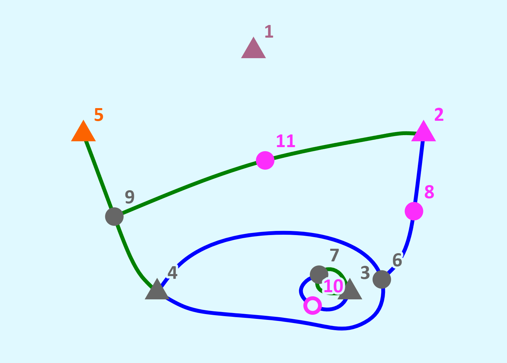
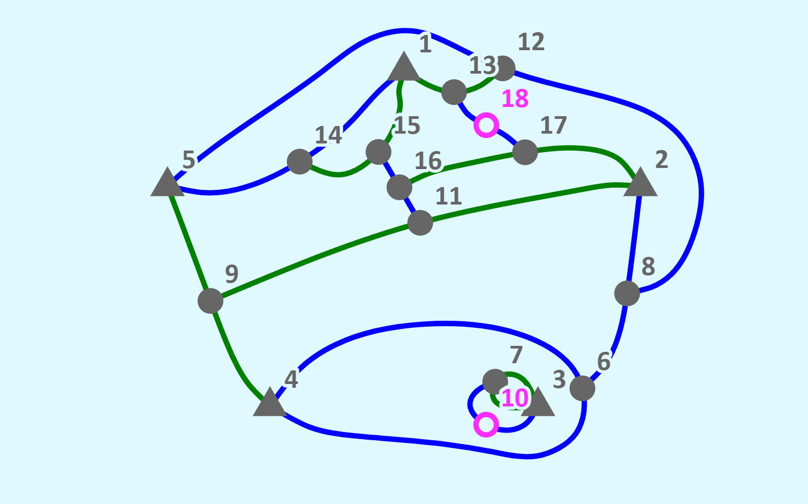
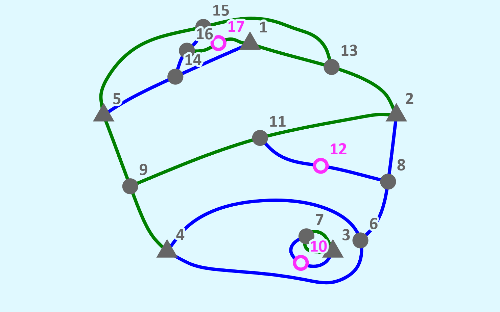
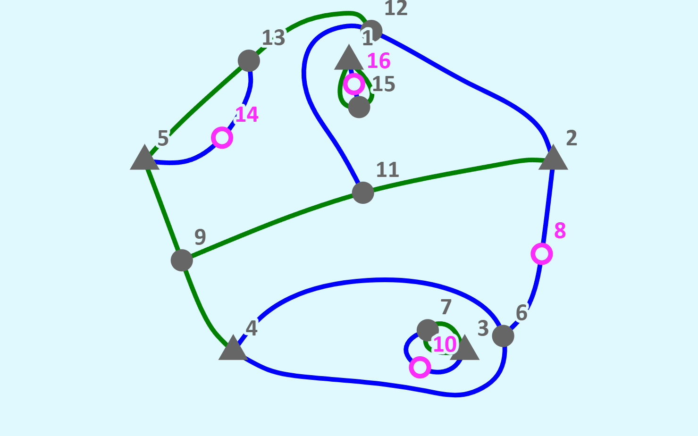

The Table of Contents below takes you to any part of this page. Clicking on a symbol like this ⇧ anywhere on the page brings you back here.

Read this section if this is your first introduction to Sprouts and this software. The easiest way to get started quickly on your fist game is to watch the video or do the tutorial below. [Have Links].
The rules of the Game are simple. Two players start with a number of spots (also called
The number of curves that still can be connected to a spot are the lives of that spot. That number equals 3 minus the number of curves already attached. It is convenient to have separate names for the different possible numbers of lives of a spot. We use the following terminology:
The colors in this Table are the defaults, they can be changed, and may be different in any picture you see.
| Lives | Name | Color |
| 3 | seed | Rose |
| 2 | sprout | Orange |
| 1 | link | Fuchsia |
| 0 | stump | Gray |
| 1, no possible destination | survivor | Fuchsia, hollow |
Most spots are shown as filled circles, but seeds can also be shown as triangles. Survivors are shown as hollow circles or triangles.
Figure 1 shows the beginning of a game. The players started with 5 seeds, shown as triangles, and labeled 1 through 5. As a first introduction to this software, and a tutorial in the mechanics of a game, follow these instructions to create the picture in Figure 1:
You are now ready to use the software. To play against the computer select
Initially there are a total of $3n$ lives where $n$ is the initial number of spots. Every new curve reduces the number of lives by 2 (one each at its start and end) but it also adds a new link, so the total number of lives decreases by 1. At the end of the game there is at least one survivor left.
  
You might argue (I did when I first learned about the game) that initially there are $n$ seeds and $3n$ lives. The last move leaves a survivor, and therefore it will take $3n-1$ moves to finish the game. Inevitably, player 1 will win if $3n-1$ is odd, and player 2 will win if it is even. It's not that simple! Look at the picture in Figure 1. There are nine lives left (count them!) but spot 10, with one life left, cannot be connected to another spot. It is a survivor! The curve 4-6-4 surrounds a separate region that was created with the original curve around vertex 3, However complex the inside of that region may be, it cannot interact with spots on the outside.
The game can continue outside that region, and there will be at least one more survivor on the outside. But there may be more than 2! Figure 2 shows three possible completions of the game, with 2, 3, or 4 survivors. The total number of moves in any game, therefore, is $M=3n-s$ where $s$ is the number of survivors. The first player plays to make M odd, the second to make it even. This is the source of all the complexity and trickery!
Since the drawing may get crowded the layout of the game Page is chosen so as to maximize the area in which you can draw. There are just two rows at the top of the page that are not used for drawing. The first row contains a number of menus that you can use to control the game. This is the Control Row. The second row gives you information about the game as it proceeds. This is the Status Row. Below it is the Drawing Area.
The size of the drawing area,
There are several ways to draw the curves. The simplest may come most naturally. Click on a spot, keep the mouse button depressed, drag the cursor to another spot, and let go of the mouse button. As you do this, all possible destinations, spots that you can reach with your curve, will light up by doubling their size. You can let go of the mouse button and stop drawing as soon as your intended destination changes its color. When you click anywhere in the drawing field this is interpreted as clicking on the nearest spot that has lives left. The starting spot is marked with a circle around it.
Clicking on link, a spot with one life left, is somewhat delicate. You can depart from a link to one side or the other. You choose the side by moving a small distance in your chose direction. If you forget and just click on link then the system will change a direction for you which may not be the direction you intended. If a link can reach another life point only from one side the system will depart towards that side even if you choose the other.If anything goes wrong with your curve but you ave not finished it hit the space bar (which interrupts any ongoing process) and try again.
The system let's you add a new seed by CTL-clicking in an empty part of the drawing area. This facility may be helpful for experiments and study, but of course adding seeds is not part of an ordinary game.
I have been programming computers for more than 50 years, and this project has been different from all preceding ones. My first project after retiring in July of 2025 consisted of writing a financial calculator in a language new to me, i.e., JavaScript. I proceeded as I had many times before: I bought a book on JavaScript, read much of it, and proceeded to write the code all by myself, debugging it laboriously as I went on. In subsequent projects, I relied increasingly on AI help, first from Gemini, and then from Claude. About 20 years ago, I had tried to program Sprouts in Java. Then, I got to a stage where you could draw curves by hand, and two players could play a game on the same computer, taking turns. There was no curve smoothing, space making, or AI play. I gave up eventually because the project was just too difficult, for me at that time. Developing this new software (comprising more than 9,000 lines of JavaScript code so far) to the stage that everything works and I am writing this User's Guide took just two weeks! Moreover, except for a couple of times when I was curious, I never looked at the code! At each stage I just told Claude what the software should do, and Claude wrote it, tested it, and debugged it. The world of computer programming has changed profoundly! Moreover, it continues to change extremely rapidly. Claude of October 2026 is vastly more powerful than Gemini of August 2025, or even Claude before the release of Claude Fable in June of 2026, or Claude Fable 5.1 in September, 2026. Beyond coding, I had many conversations with Claude about algorithmic details, and Claude was helpful in writing the documentation. I wrote this User's Guide and Claude helped with formatting, and checking for completeness and correctness. By contrast, Claude wrote the technical description almost entirely by itself and I edited it only in minor ways, with a view towards clarity and appropriate emphasis. There is of course a great deal of discussion currently of where AI is taking us. I don't know where we are going, but we are going somewhere awfully fast!